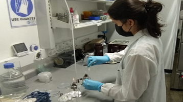
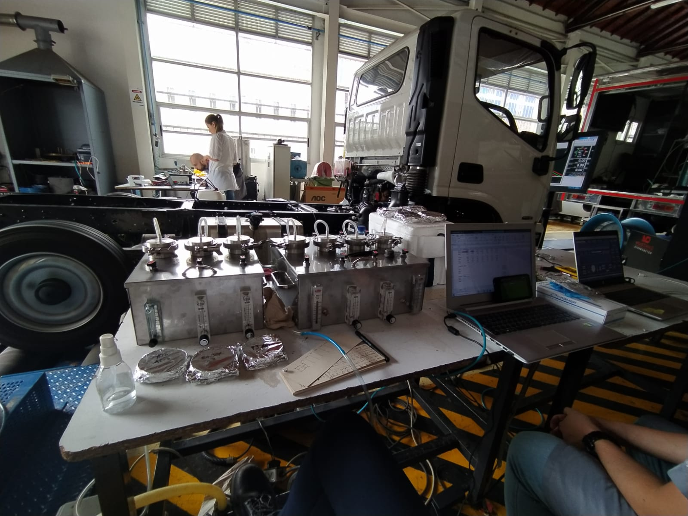

Academia
Desarrolladora Web en formación
NODO- Universidad EAFIT | Enero 2024- en curso |
Modulo NODO: FRONT-END.
Magíster en Microbiología y Bioanálisis
Universidad de Antioquia (U. de A.) | Feb 2018 - Dic 2022|
Énfasis: investigación
Tema: Aerobiología de Hongos
Tesis: "Aeromicología de ambientes intrahospitalarios con énfasis en las secciones del género Aspergillus, Medellín, 2019".
Ingeniera Biológica
Universidad Nacional de Colombia (UNAL) | Feb 2012 - Sept 2017 |
Linea de profundización: Genética y Biología Molecular.

Experiencia academica/profesional
Joven Investigador MinCiencias
U. de A.| Laboratorio: GAIA | Abr 2022 - Mar 2023.
Descripción de la beca-pasantía: Análisis del impacto del uso de mezclas superiores de biodiesel en la actividad citotóxica, genotóxica y mutagénica de las emisiones contaminantes en motores y vehículos, empleando análisis estadísticos descriptivos y de correlación sobre las mediciones en las muestras.
Auxiliar de Docencia en Microbiología
UNAL | Facultad de Ciencias Agronómicas | Feb 2017 - May 2017
Descripción: Apoyo en las prácticas de laboratorio y actividades de docencia en el curso de Microbiología.
Monitor Académico de Pregrado
UNAL | Escuela de Biociencias | Ene 2017 | May 2017
Descripción: Apoyo en actividades de docencia en el Laboratorio de Biotecnología ambiental.
Práctica Académica Especial (PAE)
UNAL | Laboratorio de Bioconversiones | 2016- 03
Descripción: Evaluación de métodos de preservación a largo tiempo en células vegetales in vitro de Thevetia peruviana por análisis de viabilidad, morfología, crecimiento celular, consumo de azúcar y análisis estadísticos correspondientes.
